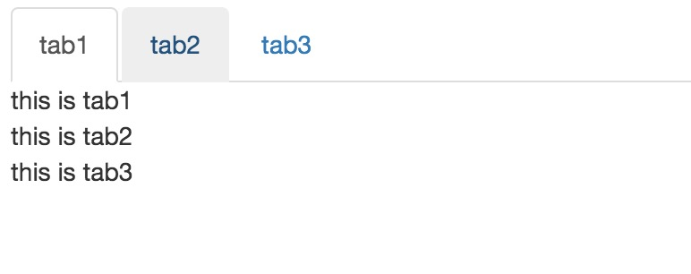

在日常工作中，常常会遇到下面这样的需求

我们需要对上面的tab做处理，点击相应的tab就显示相应的内容
不封装组件写法
最原始的写法1
2
3
4
5
6
7
8
9
10<div class="tab-container">
<ul class="nav nav-tabs">
<li name="tab1" class="active"><a href="javascript:;">tab1</a></li>
<li name="tab2"><a href="javascript:;">tab2</a></li>
<li name="tab3"><a href="javascript:;">tab3</a></li>
</ul>
<div id="tab1">this is tab1</div>
<div id="tab2" style="display: none;">this is tab2</div>
<div id="tab3" style="display: none;">this is tab3</div>
</div>
1 | $(function() { |
通过 li 标签的事件绑定，每次都便利所有的tab，显示点击的，隐藏其他的，这种做法可以实现 tab 切换的问题但是还有几个缺点。
- 无法重用，当另一个地方需要使用到时只能把代码copy过去
- 一个页面多次使用会有问题, 所有的选择器都是在全局上查找，当一个页面有两个或者三个tabs的时候会有bug
- 每一次执行显示的时候对其他的tab不管它原本的撞他，都会执行隐藏操作,这是不必要的
重用————使用jquery插件封装
为了解决上面的问题，我们把这种逻辑封装成一个tabs插件, jquery对插件的支持使用 $.fn
1 | $.fn = jQuery.prototype; //$.fn执行jQuery对象的原型 |
代码如下:1
2
3
4
5
6
7
8
9
10
11
12
13
14
15
16
17
18
19
20
21
22
23
24
25
26
27
28
29
30
31
32
33
34$.fn.tabs = function(){
var $element = this;//上下文
var showName = null;//当前显示tab 储存
//初始化操作
$element.find('div').hide();//现将所有隐藏掉
$element.find('.nav li').removeClass('active');//消除所有的选择状态
showName = $element.find('.nav li:eq(0)').attr('name');//初始化设置显示第一个tab
//事件监听
$element.on('click', 'li', function(){
show($(this).attr('name'));
});
show();
//显示逻辑
function show(name){
if(name === showName) return;
if(name){
//先隐藏原来的
hide(showName);
showName = name;
}
//显示当前的
$('#' + showName, $ ).show();
$('.nav li[name=' + showName + ']', $element).addClass('active');
}
function hide(name){
//jquery方法的第二个参数表示在哪个dom搜索，默认为document
$('#' + name, $element).hide();
$('.nav li[name=' + name + ']', $element).removeClass('active');
}
};
$(function() {
$('.tab-container').tabs();
});
这样实现之后，再别的地方需要调用只只需要调用 tabs 方法即可，但是，这种实现仍然是粗糙的。show 和 hide 方法在每次调用tabs时都会重新创建，这样比较消耗内存。
多次使用————面向对象方式处理
用面向对象处理，将一些方法和属性放在原型中处理，更加高效。在编码之前，我们需要对这个组件进行分析，整个 tabs 由两个部分组成，一个导航的菜单 menu, 一个是与之对应的内容（就是下面那个div） panel, 可以把一个 menu 和 panel 组成一个对象 tab , 而 tab 有两个方法 show 和 hide 控制它的显示和隐藏，而我们的 tabs 就是 tab 对象的集合，控制着每一个tab的显示和隐藏.
1 | function Tabs($element){ |
用面向对象方法编写的组件，拥有了不错的性能，而且在代码逻辑上更为清晰，理解起来比之前的写法要复杂一点。
可配置————options处理
再上面的代码中我们可以看到，所有的tabs组件开始都是显示的第一个，如果，我们想在最初显示第二个或是第三个，这个组件就无法满足我们的需求，因为它还没有加入参数(options)的处理。
通常在封装时将可变，与核心逻辑无关的属性，抽取出来成为这个组件 options, 例如 tabs 组件中,它默认显示的tab页，以及选中tab时li上的样式，这些我们都可以提取出来,以保证的组件的灵活性
1 | Tabs.defaults = { |
暴露组件内部动作————事件处理
加入了参数处理之后，组件就有了不错的灵活性，但是，组件内部发生改变时，再外面无法得知，假如我们有这样一个需求,再某个 tab 显示的时候，初始化这个tab的数据，这个时候我们就需要给组件假如事件处理，当内部发生改变的时候，触发某个事件，外部可以监听事件来观察组件的变化，做相应的处理
1 | Tabs.prototype.show = function(name){ |
提供方法给外部调用
很多的时候组件也会有一些方法让外部调用，已达到手动改变组件状态的效果，例如我们需要再点击一个按钮之后显示 tab2,这种时候我们需要修改定义插件那部分的代码，以暴露方法给外部调用
1 | $.fn.tabs = function(options){ |
到这一个完善的组件就构建完成啦，再编写组件中还有一些需要注意的:
- 常用的dom或是jq最好是作为组件属性缓存起来，这样可以减少dom重复查找所消耗的时间；
- 一个组件要有 detory 在组件移除是要释放掉内存和事件绑定;
- 每次组件内部状态发生改变都要触发事件，这样可以让组件更加灵活;
- 不要阻止组件内部元素事件冒泡
最后
我自己有封装一个jquery插件来定义组件，把组件定义常用的操作例如事件、外部调用方法，等等都有封装
jquery-component
用jquery-component定义组件:1
2
3
4
5
6
7
8
9
10
11
12
13
14
15
16
17
18
19
20
21
22
23
24
25
26
27
28
29
30
31
32
33
34
35
36
37
38
39
40
41
42
43
44
45
46
47
48
49
50
51
52
53
54
55
56
57
58
59
60
61
62
63
64
65
66
67
68
69
70
71
72
73
74
75
76$.component('tabs', {
//默认参数
options: {
showName: null, //当前显示tab名称
activeClass: 'active', //当tab被选择时的样式
menuSelector: '.nav li', //找到menu的选择器
menuAttr: 'name' //指定menu上指定属于哪个tab名称的属性
},
//实例化调用方法
init: function() {
//初始化每一个tab对象
this.tabs = {}; //储存tab
var $element = this.$element;
var self = this;
var op = this.options;
$('div', $element).hide(); //现将所有隐藏掉
$(op.menuSelector, $element).removeClass(op.activeClass); //消除所有的选择状态
if (!op.showName)
this.showName = $(op.menuSelector + ':eq(0)', $element).attr(op.menuAttr); //初始化设置显示第一个tab
else
this.showName = op.showName;
var attrName = op.menuAttr;
$('.nav li', $element).each(function() {
var name = $(this).attr(attrName);
var $menu = $(this);
var $panel = $('#' + name, $element);
var tabOp = {
activeClass: op.activeClass
};
var tab = new Tab($menu, $panel, tabOp);
self.tabs[name] = tab; //缓存tab
});
//事件监听
$element.on('click', op.menuSelector, function() {
self.show($(this).attr(attrName));
});
this.show();
},
show: function(name) {
if (name === this.showName) return;
if (name) {
this.tabs[this.showName].hide(); //隐藏原来的
this.showName = name;
}
this.tabs[this.showName].show(); //显示当前的
this._trigger('show', this.showName);//对事件的封装
},
destory : function(){
//当元素被销毁的时候回自动调用这个方法
}
});
function Tab($menu, $panel, tabOp) {
this.$menu = $menu;
this.$panel = $panel;
this.options = tabOp;
}
Tab.prototype.show = function() {
this.$menu.addClass(this.options.activeClass);
this.$panel.show();
};
Tab.prototype.hide = function() {
this.$menu.removeClass(this.options.activeClass);
this.$panel.hide();
};
$(function() {
$('.tab-container').tabs({
showName: 'tab2'
});
$('.tab-container').on('tabs.show', function(e, name) {
alert(name);
});
});